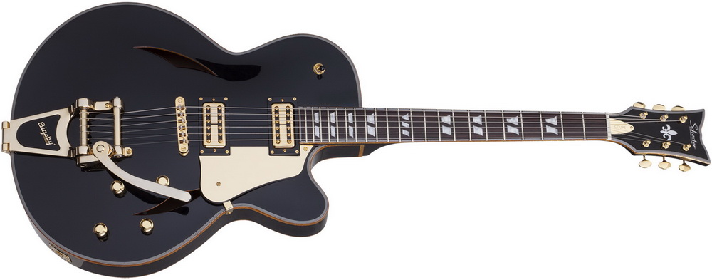

Локшина – соба, удон, і звичайно ж, рамен

Цей список не буде повним без концепції локшини, намазаної у ситному бульйоні. Я згадав, що всі
три
види локшини розрізняються за формою та інгредієнтами, але результат зазвичай дуже схожий.
Велика
тарілка гарячого супу, що робить ваше серце щасливим!
Соба – довга тонка гречана локшина – вже давно є одним з основних продуктів японської кухні,
особливо в гірських районах, де витривала гречка росте краще, ніж рис. Локшину подають або в
гарячому бульйоні зі смаком соєвого соусу, або при кімнатній температурі на бамбуковій циновці з
бульйоном збоку для занурення. Пуристи, які скаржаться на локшину з супом, віддають перевагу
останньому.
Рамен (яєчна локшина в солоному бульйоні) – улюблена страва японців для пізньої вечері. Це також
чудовий приклад імпортної страви — в даному випадку з Китаю, яку японці повністю і чудово
приготували по-своєму. Є чотири основні стилі супу: тонкоцу (свиняча кістка), місо, соєвий соус
та
сіль. Фукуока особливо відома своїм багатим раменом тонкоцу, а гострий місо-рамен є фірмовою
стравою
Хоккайдо.